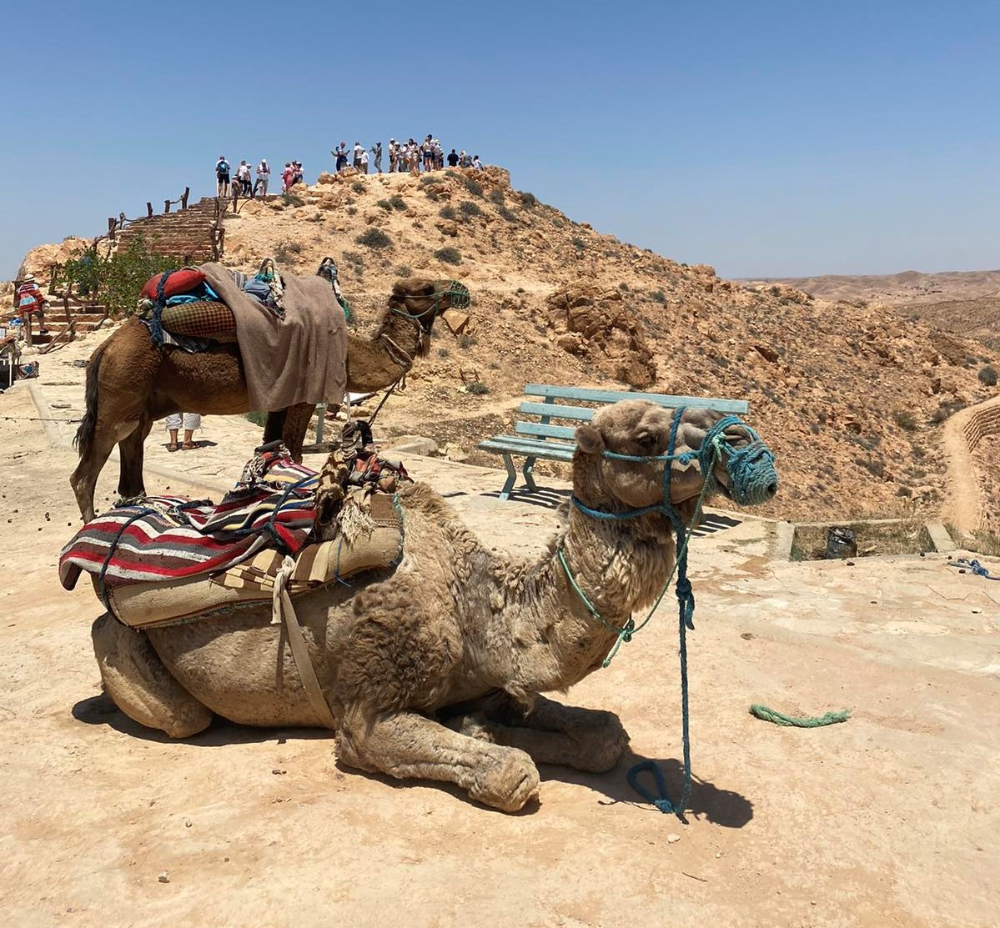
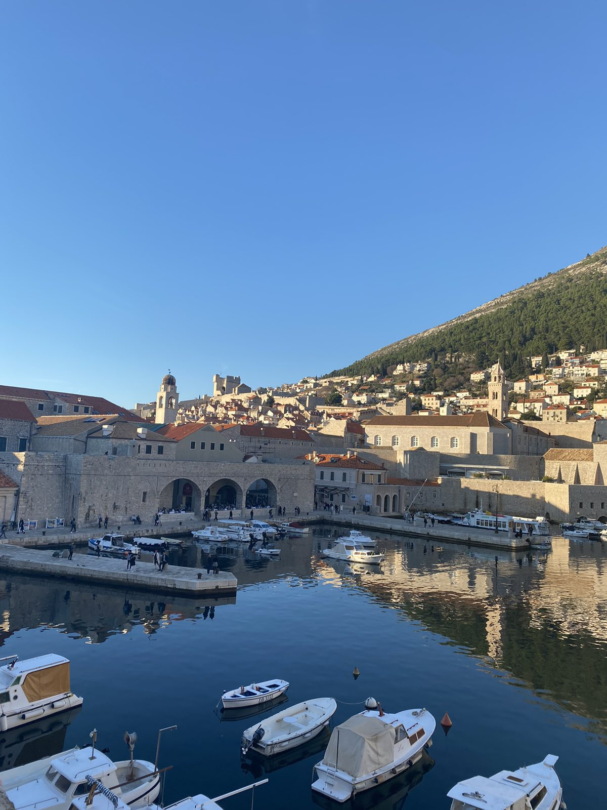

Every summer I work at a local coffee bar so that at the end of the summer, I can go somewhere on holiday. Traveling makes me really happy, because I love exploring new places, meeting new people, making friendships that last for a lifetime and discovering new cultures. Here are some of my favorite places I have visited:
My last trip was to Tunisia. This year, Tunisia has the best offers and attracts many tourists. It is a very poor country, but the people there are very hospitable, nice and positive. What left the biggest impression on me is how they are always smiling and are happy with the smallest things. The highlight of the trip was going to the Sahara Desert. The temperature was around 40-45 Degrees Celsius, so I felt like I was being cooked on the sand. But no matter the heat, the experience was unforgetable. We rode camels, we drove a jeep on the dunes, we saw many sets where famous movies were filmed such as Star Wars, and we also visited famous oasis. We had one day trip to El Jam, where the largest colosseum in Africa is located. Enjoy the amazing photos I took!
Italy is my favorite country I have visited. She is very rich with history, architecture and culture. We were in Milano, Trieste, Venice and Verona. Each of these cities has its own beauty, but what gave me goosebumps was Venice. I have never seen anything like that city. The whole day that we spent there, I felt like I was in a movie, it was unreal! I think I feel in love with the italian culture. I love how everyone was so unbothered, just minding their own business drinking Aperol Spritz every afternoon. After that, to this day my favorite drink is Aperol Spritz. I also loved the food, I tried to get every dish that represents the italian cusine, but in one week stay that was impossible. That's why I am going back there as soon as I can!
I visited Croatia for the winter holidays, but since it was orginised by agency, we were also in Budva, Montenegro, which is where we welcomed the new year. In these countries I really felt like I'm home, maybe because the language is similar to ours, or maybe because the people were very friendly. However, I was impressed with the beauty these counties have. Budva felt like summer city with long beaches and colorful restaurants, so I can wait to go again there in summer. On the other hand, Dubrovnik was perfect for a winter day. We saw all the locations wherw the famous tv show Game of Thrones was filmed, and I felt like I was reliving some scenes. Since me and my dad are very big fans of the show, we both enjoy thatt trip very much.
